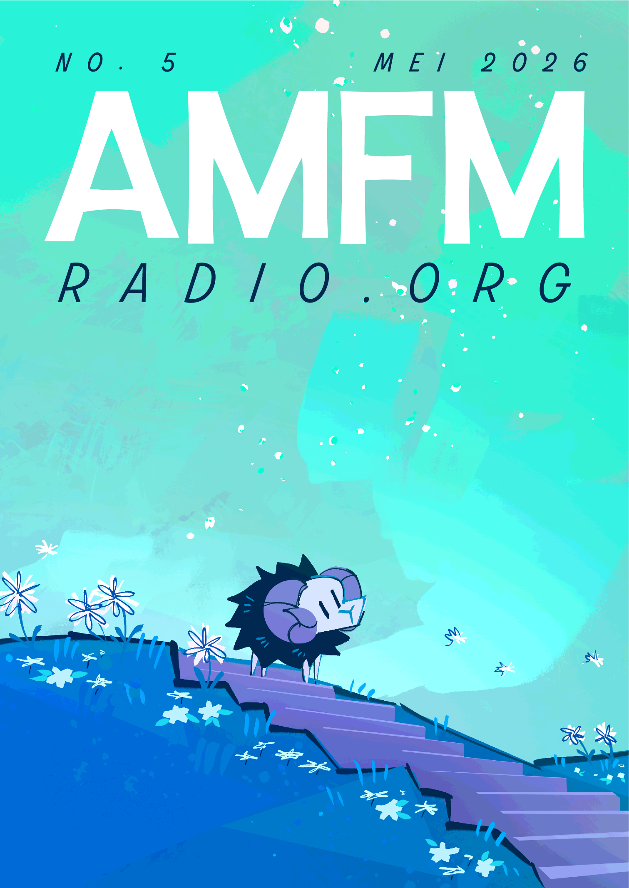
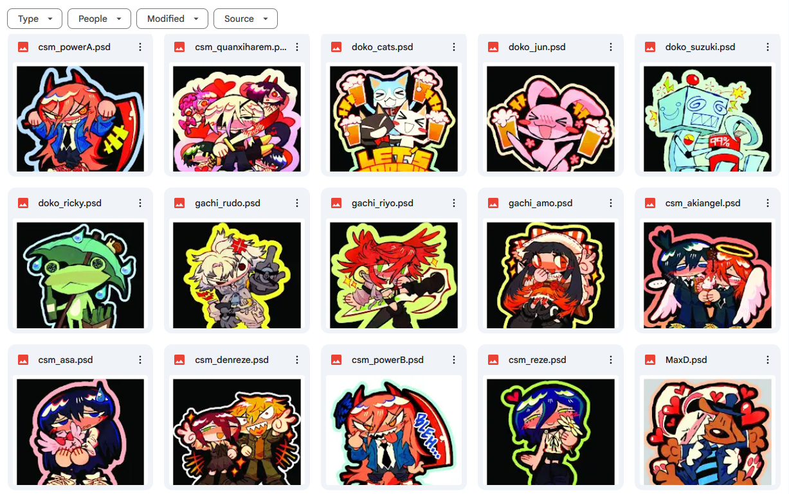
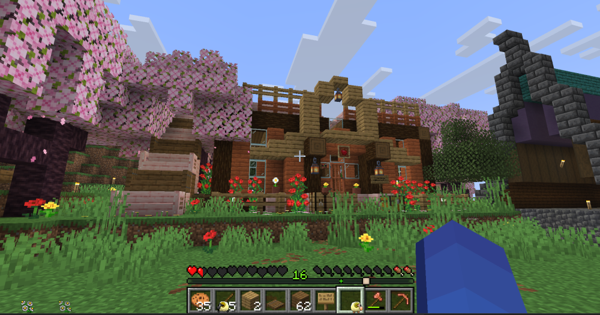

[2026/05/30]
Mei 2026

Happy summer to the northern hemispherites and happy winter to the southern hemispherites! As for equator people, go stand in the corner and think about what you've done.
I’m still annoyed that I missed May’s blogpost by a week, so I tried to write this blogpost a few days earlier to give myself more time to write, edit, and give Aidan more time to beta read my blogs. The thing is, I’m very lazy, and I’m sending this to him one day before the deadline. Sorry Aidan.
Something I’ve been working on nonstop this month: new stickers!! I’ve been making as many as I can during my free time. I’ve still got a day job I have to hold down, but I switched to part-time because of the amount of stress it was giving me… I’m earning less now, so I’m trying really hard to make up for it by selling more stickers. I’m trying to make 100 new designs by the time September rolls around; that’s a really ambitious number to be honest, so I’ll probably end up with more like 50-80 sticker designs. Still, I think it’s good to set goals for myself… Here’s the first 15 I’ve made the past two weeks! I’m getting these manufactured right now and they should hit my shop within two or three weeks.

I’ll try to get new stickers manufactured every month. When a new batch of designs gets made, I’ll post about them here. It’d mean a lot if you guys could share my sticker shop with your friends who might like my stuff :)
Drawing has been a lot harder lately (I have lower back pain…), and although I’ve been trying to draw more lately, I still easily get burnt out and frustrated. I don’t really know how to remedy it. I should start posting on social media again and interacting with other artists (I say this, but never do it). I think I’m already content with my circle of friends and posting on this website.
Since I’ve got more free time than usual, I’ve been playing video games again, and it’s been really fun! A few days ago my friend Stella bought me Minecraft. Believe it or not, I never really played Minecraft as a kid. I didn’t grow up with it, my friends didn’t play it, and I didn’t know how to pirate games. It turns out that a lot of people are very surprised to find out I got into Minecraft in my twenties. I’m surprised too, because Minecraft modpacks are literally the peak summer gaming experience… I can see how it’s so addictive to schoolkids and I know that I’d probably have gone crazy over this game if I played it when I was younger. Minecraft is like the archetype of a video game to me. You say the phrase “video game”, and Minecraft is probably the first thing that pops up in many people’s heads.
I’m playing on two servers right now: Stella’s modded server and my other friend’s vanilla server. I’m not really doing anything interesting besides learning the basic controls and building houses, though. When I first got on the game, I said, “Oh, so you left-click to mine!”, and it made Aidan laugh at me…
Aidan’s Note: It was really, really funny.

One of my houses in the vanilla server. My other house in Stella's server is incomplete, but I made it a hut that floats over the water. Both are still a WIP.
The more Minecraft I play, the more confused I get about how little QOL stuff there is in the game. You can’t sort chests and there’s no map in the corner of the screen unless you install mods for those things. It feels so lazy sometimes. I know that Mojang holds mob votes, too; I don’t understand why people have to vote for stuff when they clearly can just add all the mobs into the game. They have all the time, money, and resources for it. It just doesn’t make sense to me at all… It’s like the opposite of Stardew Valley where the creator is always like “I’m not adding any more updates” and he just keeps updating it with new content and QOL stuff. It’s the anti-Stardew.
My days have just been spent working, drawing stickers, and gaming, so I don’t have much else to say. Even the cover for this blog is very simple because I'm so fresh out of ideas when it comes to art since I'm pouring all of my creative brainpower into stickers at the moment. Thanks… Bye…